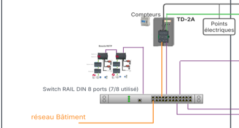
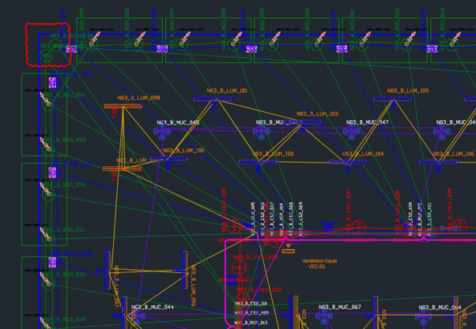
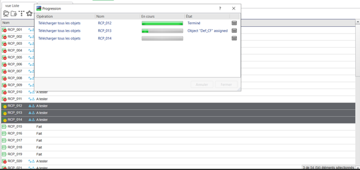
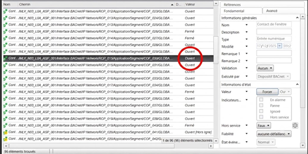
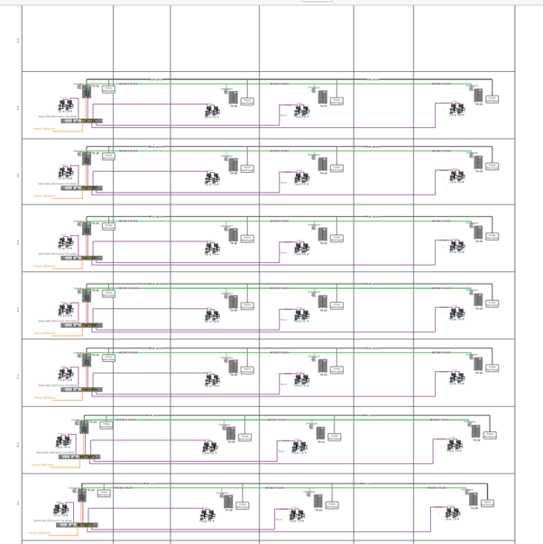
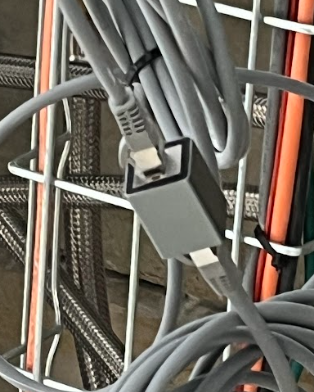
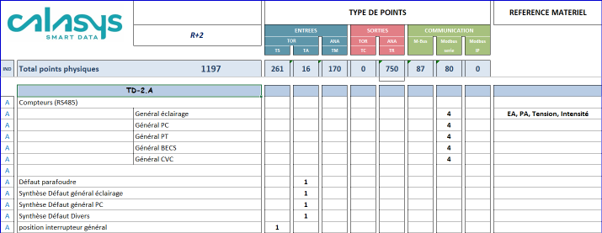
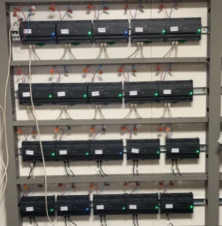

Concevoir et modéliser l'architecture sur AutoCAD
✦ Démarche technique :
À partir des plans guides transmis par le bureau d'études EGA, j'ai pris en charge la structuration fine et la modélisation technique sur AutoCAD. Mon travail a consisté à concevoir de manière standardisée l'architecture réseau d'un étage type (voir figure 1), à découper les zones de bureaux, configurer les liaisons logiques (Room Bus, bus de terrain) et tracer le câblage d'exécution (voir figure 2). J'ai ensuite réalisé l'extraction automatisée des listes de points vers Excel pour supprimer tout risque d'erreur humaine.
✦ Recul professionnel :
Cette phase d'étude préliminaire m'a appris l'importance d'une planification rigoureuse. Prendre le temps de valider graphiquement chaque boucle logique et chaque zonage sur nos livrables (voir figures 1 et 2) permet d'anticiper les incohérences et de sécuriser toute la suite du déploiement technique sur le chantier.

Figure 1 : Modélisation théorique du synoptique réseau et du lot type d'un étage.

Figure 2 : Extrait du plan d'implantation réel et tracé d'exécution des bus sur AutoCAD (Niveau 3).
Mettre en service et valider le lot témoin du R+3
✦ Démarche technique :
J'ai pris en charge la mise en service fonctionnelle et les essais unitaires complets sur le lot témoin (Lot B du R+3). Connecté à l'AS-P via la WorkStation Schneider Electric, j'ai exécuté l'ensemble des téléchargements d'objets applicatifs (voir figure 3) avant de dérouler les protocoles de test : appairage des luminaires (CLU) par flashage visuel, forçage de course des stores (CS2), détection des multi-capteurs (MUC) et contrôle de la bascule d'état des contacts d'ouverture de fenêtres (voir figure 4).
✦ Recul professionnel :
La validation d'un lot témoin est une étape stratégique pour valider et figer les solutions techniques avec le client avant d'industrialiser les tests à tout le bâtiment. Suivre la bonne exécution des chargements de programmes (voir figure 3) puis voir les variables commuter en temps réel lors des tests de terrain (voir figure 4) a été extrêmement gratifiant.

Figure 3 : Téléchargement massif des objets et applications de régulation dans les modules RPC.

Figure 4 : Interface de recette et remontée en direct des changements d'états des contacts de fenêtres (COF).
Résolution d'une rupture physique de boucle réseau RSTP
✦ Démarche technique :
Lors des scans d'adressage réseau d'un étage, un ensemble de régulateurs RPC apparaissait hors-ligne sur le serveur. J'ai analysé notre schéma d'ingénierie réseau de boucle redondante (voir figure 5) avant de mener une investigation physique sur le terrain au niveau des chemins de câbles en faux-plafond. J'y ai découvert un câble RJ-45 trop court et tendu qui s'était débranché. J'ai résolu le dysfonctionnement de manière autonome en posant un coupleur femelle-femelle pour rallonger la liaison proprement (voir figure 6) et refermer la boucle de secours RSTP.
✦ Recul professionnel :
Le chantier confronte directement le technicien aux imprévus. Ce dépannage curatif réussi en autonomie m'a appris à mener une démarche de diagnostic rigoureuse en m'appuyant d'abord sur la topologie théorique (voir figure 5) puis en appliquant une solution physique et réactive directement sur le tas (voir figure 6).

Figure 5 : Schéma d'ingénierie de la boucle de redondance RSTP interconnectant les switchs.

Figure 6 : Photo terrain de l'intégration du coupleur femelle-femelle en faux-plafond.
Réaliser la préparation et la configuration du matériel
✦ Démarche technique :
Pour préparer le déploiement massif sur le chantier, j'ai développé un tableau Excel logistique pour suivre les flux de réception, l'étiquetage et le colisage par zone (voir figure 7). J'ai ensuite conçu et câblé un banc d'essai et de programmation au sein de notre atelier relié à un serveur AS-P de test (voir figure 8). Cela m'a permis d'assurer en autonomie la migration logicielle de centaines de régulateurs RPC vers la version V6 et de configurer leur adressage IP unique par étage.
✦ Recul professionnel :
Manipuler d'importants volumes d'équipements industriels demande une rigueur organisationnelle absolue. Associer un suivi informatique strict des stocks (voir figure 7) à une préparation de masse méthodique sur table en atelier (voir figure 8) a optimisé mes méthodes de travail et sécurisé nos livrables avant la pose.

Figure 7 : Tableau Excel de pilotage de production et de colisage du matériel par zone.

Figure 8 : Vue globale du banc d'essai d'atelier configuré pour les mises à jour en série V6.